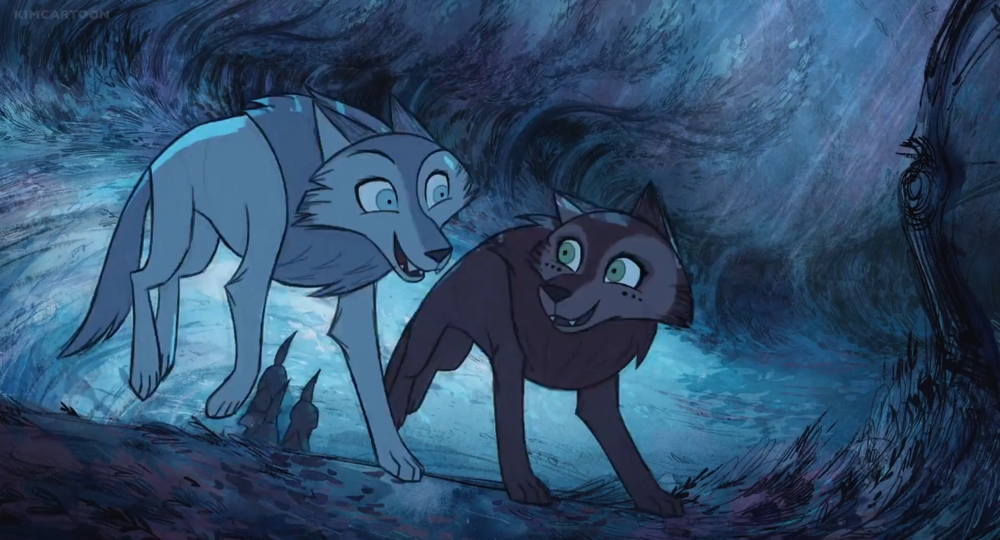
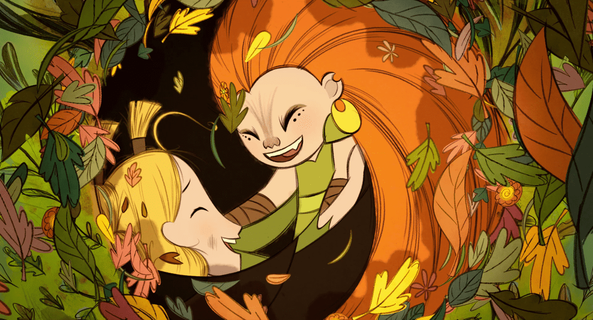
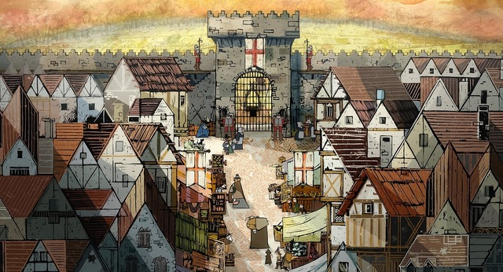

- Wolf walkers -
- เป็นการ์ตูนที่น่ารักมากๆๆ เสียน้ำตาไปหลายลิตร 5555
- ว่าด้วยเรื่องราวของ Robyn กับคุณพ่อซึ่งได้รับมอบหมายงานจาก Lord Protector ให้กำจัดหมาป่าให้หมดเพื่อถางป่าไปสร้างเมือง แต่หารู้ไม่ว่าในป่านั้นมี Wolfwalker ซึ่งคอยปกป้องป่าแห่งนี้อยู่
- ความแปลกแยก: Wolfwalkers ได้พูดถึงประเด็นของความแปลกแยกหรือ Alienation
ออกมาได้น่าสนใจมากๆ ทั้งในด้านของ Robyn และคุณพ่อซึ่งย้ายมาจากอังกฤษ ก็ต้อง
พยายามที่จะปรับตัวให้เข้ากับสังคมและคนรอบข้างให้ได้ หรือ Meph ซึ่งเป็น Wolfwalker
ที่อาศัยอยู่กับคุณแม่และฝูงหมาป่าอันห่างไกลจากผู้คน ทั้งหมดนี้ล้วนแสดงถึง
ความแปลกแยกและความไม่เข้าใจกันของคนกลุ่มหนึ่งสู่อีกกลุ่มหนึ่งจะด้วยความตั้งใจ
หรือไม่ตั้งใจก็ตามซึ่งความรู้สึกแปลกแยกเพียงเล็กน้อยของ Robyn กับคุณพ่อนั้นก็ได้
นำไปสู่ปัญหาต่างๆที่เกิดขึ้นในเรื่อง

- ความกลัว: จะสังเกตุจากหนังได้ว่าหลายๆครั้งเหตุการ์ณความรุนแรงและความไม่ลงรอยกัน
ของคนในสังคมหรือแม้กระทั่งคนในครอบครัวเองก็ตาม มักจะเกิดขึ้นจากความกลัว กลัวที่จะ
แปลกแยก กลัวไม่ได้รับการยอมรับ กลัวอันตรายจากหมาป่า กลัวอำนาจสังคม เป็นต้น
สิ่งเหล่านี้มักก่อให้เกิดการใช้ความรุนแรงที่ตามมาไม่ว่าจะด้วยความตั้งใจหรือเพราะความไม่รู้
และไม่เข้าใจก็ตาม ซึ่งตรงนี้ทำให้เรานึกถึงคำพูดใน Star Wars ที่บอกประมาณว่า “ความกลัว
จะนำไปสู่ความเกลียดชัง” ซึ่งมันก็จริงตามนั้นแหละ เพราะตามธรรมชาติของมนุษย์แล้ว
การที่เรากลัวสู่หรือไม่มีความเข้าใจในอะไรซักอย่าง เราก็มักจะเกิดการอคติ การไม่ชอบ
หรือแม้กระทั่งเกลียดสิ่งนั้นๆไปเลย เพราะฉะนั้นเราเลยมองว่าอีกทางที่ดีที่สุดในการเอาชนะ
ความกลัวก็คือการทำความเข้าใจในสิ่งนั้นและก้าวผ่านมันไปให้ได้

- ความรัก: มันเป็นทั้งความรักและความผูกพันธ์เนี่ยแหละที่ทำให้ตัวละครในเรื่องนี้
กล้าที่จะทำในสิ่งที่น่ากลัวหรือแม้แต่สิ่งที่ผิดได้โดยไม่ลังเล เพียงเพื่อที่จะปกป้องคนที่เค้ารัก
และห่วงใยเพราะสุดท้ายแล้วคนที่ทำให้เรามีความสุขได้หรือคนที้รามอบความสุขให้กับเค้าได้
อย่างไม่มีเงื่อนไขก็คือ “ครอบครัว”

ปล. เพลงประกอบทำออกมาได้ดีมากๆ มีเสน่ห์ของเพลงโฟลค์ไอล์แลนด์ และประเทศในแถบนั้น ได้อย่างลงตัวและน่าหลงไหล อยากแนะนำให้ทุกคนดูกันนะ ปล2.เรื่องนี้ยังสอนให้เรารักธรรมชาติและสิ่งแวดล้อมด้วยนะ555
#wolfwalkers
ผู้เขียน: ประยศ ปลอดภัย (Red)
ภาพประกอบ: ประยศ ปลอดภัย (Red)